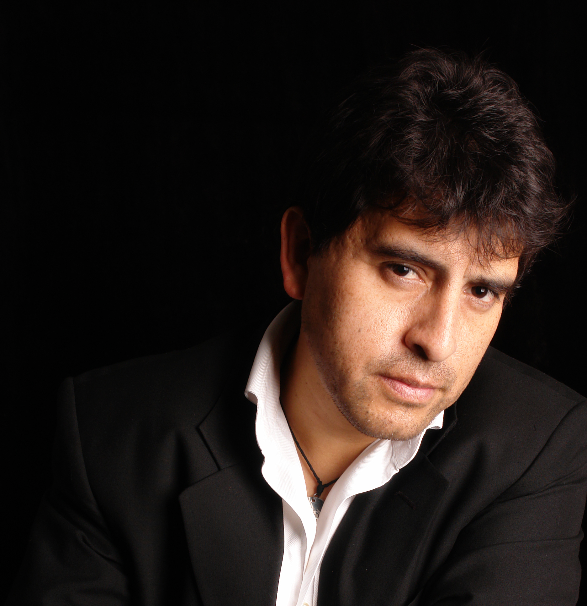
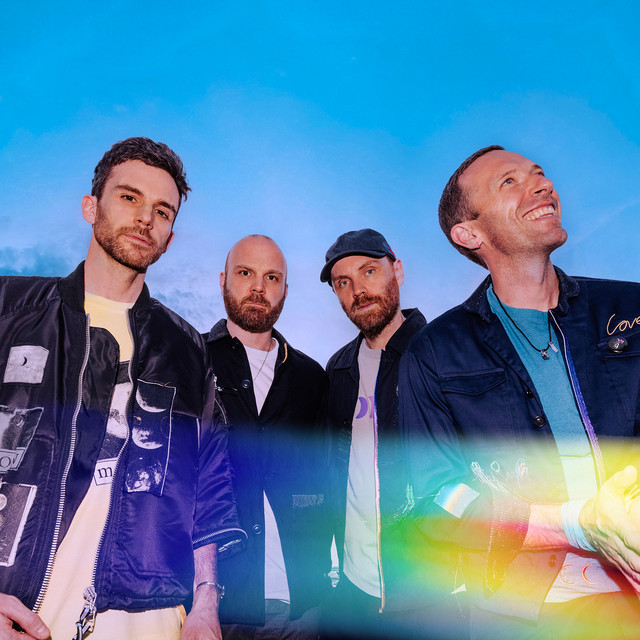

Música
Playlists para estudiar y descubrir artistas nuevos.
Conoce mi historia, mis valores, pasiones y todo lo que me define como persona y futura ingeniera de sistemas.
Primeros proyectos académicos
Desarrollo de software en equipo.

Desarrollé proyectos universitarios aplicando metodologías ágiles, control de versiones y diseño de interfaces. Cada entrega fue un paso hacia mi perfil profesional.
Voluntariados y RSU
Compromiso social universitario.

Participé en actividades de responsabilidad social y voluntariados, fortaleciendo liderazgo, empatía y sentido de servicio hacia mi comunidad.
Playlists para estudiar y descubrir artistas nuevos.
Drama, ciencia ficción y historias con giros inesperados.
Estrategia y cooperación en mundos virtuales.
Caminatas al aire libre en Huánuco y alrededores.
Explorar herramientas, código y tendencias tech.
Artículos de desarrollo personal y tecnología.
pop latino / música urbana
Canción favorita: «Bailando»
Me gusta su autenticidad, variedad, ritmo urbano y el estilo de sus canciones.
Folclor contemporáneo andino

Canción favorita: «Sin tu amor»
Me gusta su estilo de música tradicional peruana combinado con sonidos y letras románticas.
K pop / Hip-hop

Canción favorita: «Grow up»
Sus producciones son perfectas para concentrarme y recargar energía.
Rock alternativo / Pop

Canción favorita: «Yellow»
Sus melodías emotivas me acompañan en momentos de reflexión y estudio.